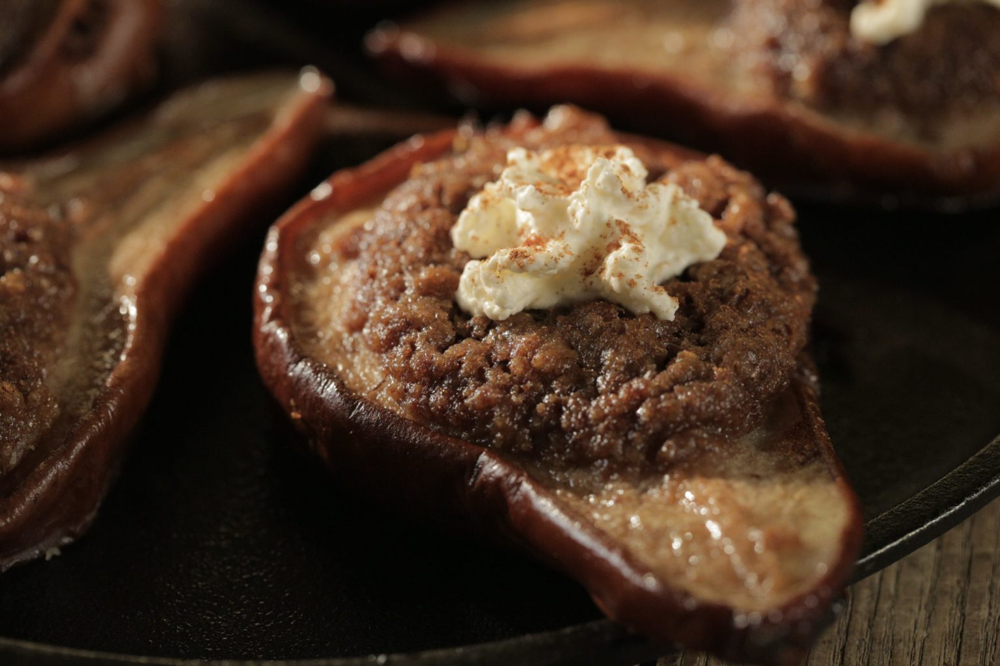
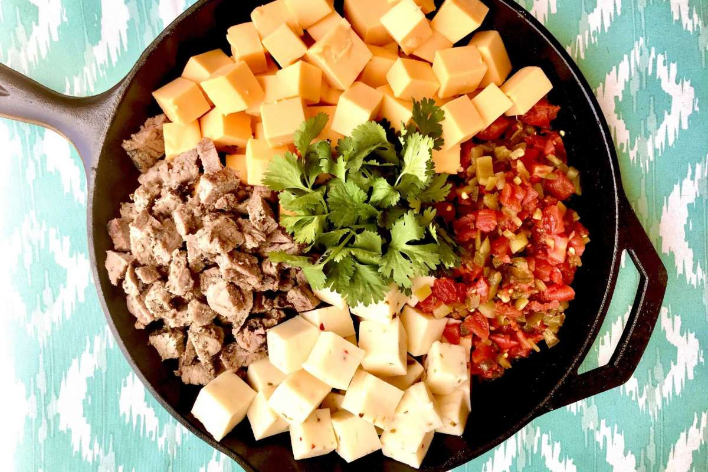
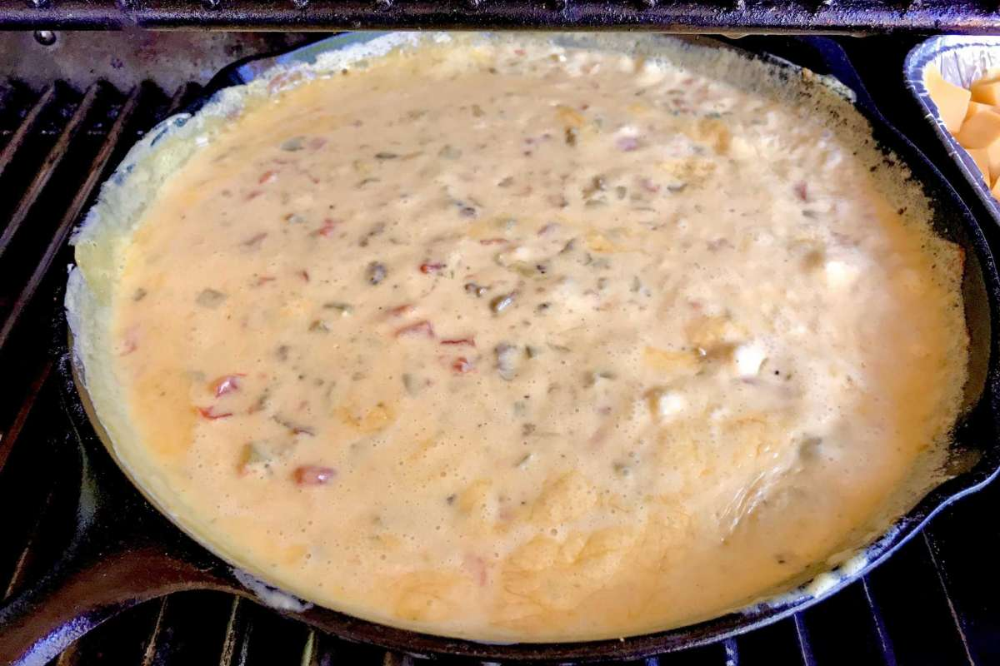

The Tri-tip
By far my favorite cut of meat to smoke is a tri-tip steak, especially for a quick and easy meal. It’s perfect for beginners who aren’t sure what “big” cut they want to try first. The trick to perfecting this cut is relatively simple and it’s called a reverse sear. What this means is, you smoke the meat first and then towards the end of the cook, fire up the heat and sear the steak to your perfected doneness. We’ll help guide you through this simple process.
I love a tri-tip because they smoke quickly and make a delicious meal that everyone will enjoy. The tri-tip is a triangular cut of beef that has great marbling and is about 1 inch thick. The grain will change on the cut, so keep that in mind when placing it on the smoker. I always rub it with our signature rub, but just salt and pepper works wonders for this cut. Always rub the meat cold and put it in the smoker cold as well because the meat takes on more smoke when it’s cold. Fish is the only meat that I bring to room temperature, but that process can be found with our other stories and recipes.
Once your smoker is preheated to 225 degrees and your meat is rubbed, put it on and set a timer. If you have a leave in thermometer, perfect. If not, that’s ok, you’ll just check it in an hour and a half or so. On a side note, if you don’t have a smoker, you can always put your charcoal to one side of your grill and add wood chips close by them. If you have a gas grill, light one side and keep your food on the other side. Make a boat out of foil and add chips to it and place it on the side that’s lit and you’ll get smoke. On average mine take two hours to get to 125-130 degrees and then reverse sear it to 135 for medium rare.
Every smoker is different and our offset stays pretty hot on the fire side, so I do my reverse sear on the right side of the grill. If you have a weber or a gas grill, just move the steak to the side you have heat. Resting the meat is important, and I prefer to use a cooler with the meat wrapped in foil and then old towels to keep the heat in.
Once it’s rested, it’s time to slice. When you cut tri-tip, cut against the grain and cut it as thin as you can. This cut of beef will just melt in your mouth and is full of such flavor, I’m sure it’ll become a dinner staple in your family as well.
Smoked Pears
Our family loves fruit and vegetables, but have you ever gotten some pears that aren’t ripe yet and they're too hard to enjoy? Well, slice them in half, carefully cut out the core and add a little brown sugar and butter to them and smoke them for 45 or so minutes. You’ll have a snack everyone will enjoy. It’s also fast!
 Smoked pears are sure to be a hit at your next get together!Smoked Queso
 Put ingredients together ½ Pound Ground Beef, Cooked and SeasonedPound Velveeta Cheese (cubed)
½ Pound Pepper Jack CheeseBlock Cream Cheese (cubed)
½ White Onion1 Large Tomato
1 Large Hatch (if in season) or Anaheim Pepper1 Jalapeno (keep seeds if you like it hot, discard if not)
 Smoke until delicious